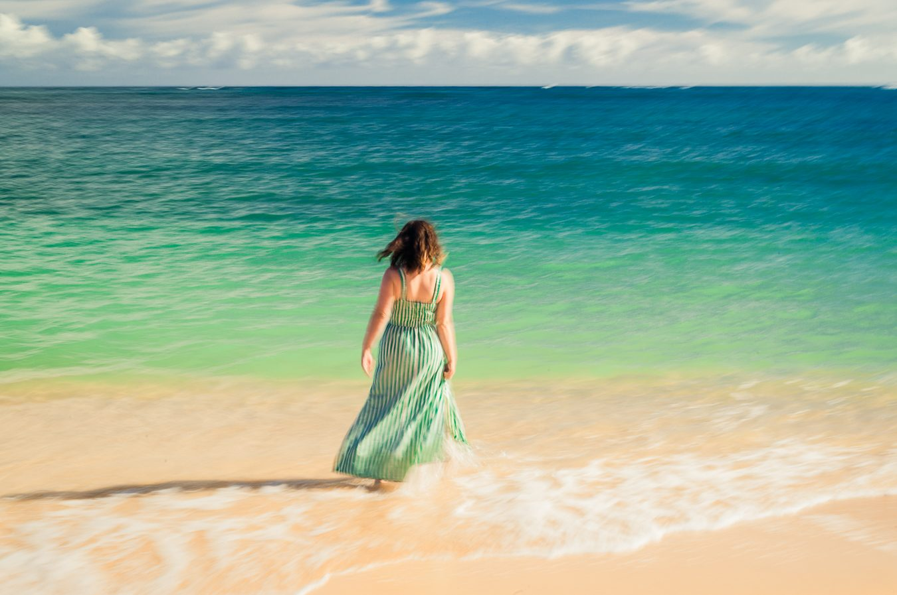
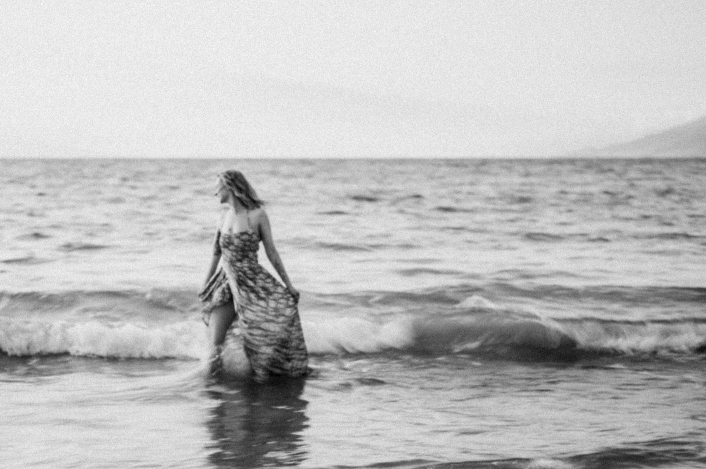
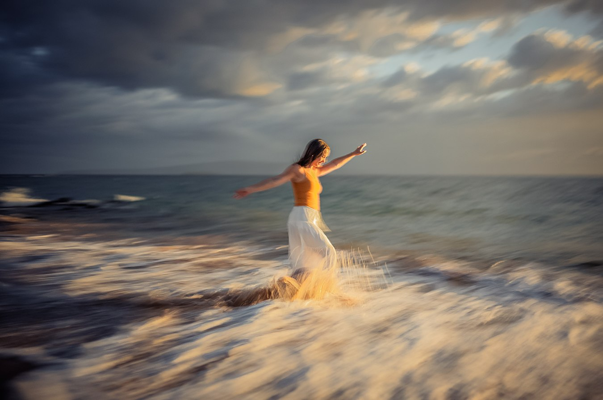
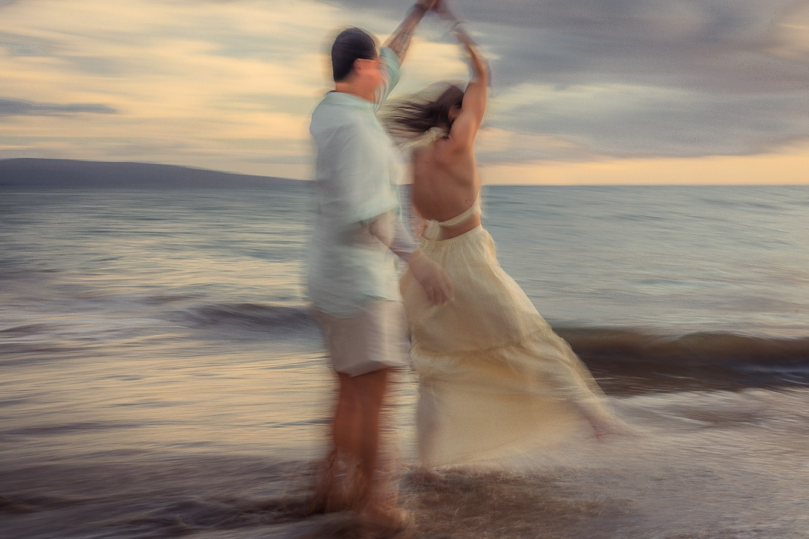
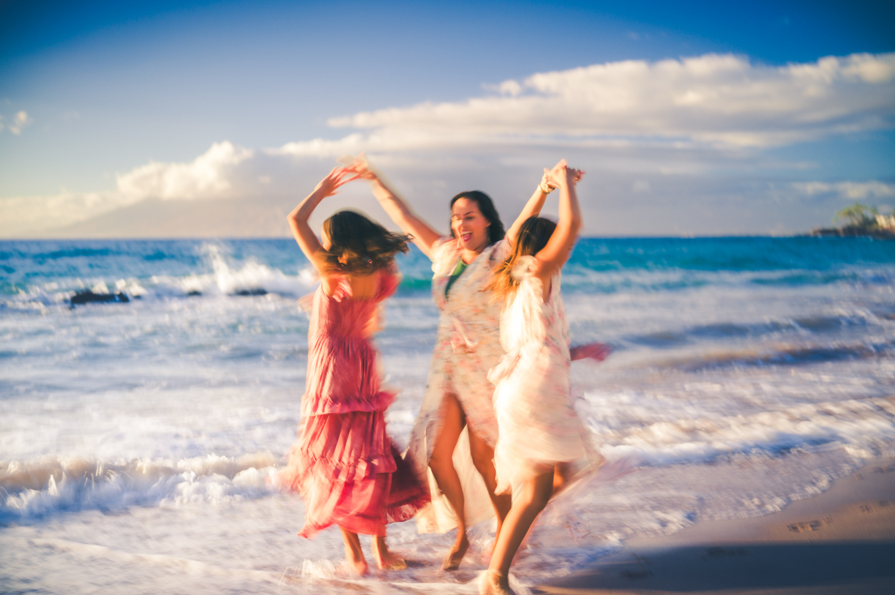

Two ways of seeing the same beach.
Most of what we photograph is bright, warm and true to the day you had. But twice a session, we tend to reach for something else — a camera that only sees in grey, or a shutter slow enough to turn movement into brushwork. These are the two we are asked about most.
Why a photograph can behave like a painting.
A colour photograph tells you what a place looked like. Take the colour away, or let the subject move while the shutter is open, and it starts telling you what the place felt like instead — which is closer to what a painter was always doing.
Neither of these is a filter applied afterwards. Black and white is made on cameras that have no colour sensor at all. The impressionist frames are made in the camera, by moving with the subject at a slow shutter speed. Both are decisions made standing in the water with you, not at a desk later.
When colour gives way to feeling.
We shoot black and white on dedicated Leica monochrome bodies. Because there is no colour filter over the sensor, every pixel records light itself — which is why the tones hold together the way film does, and why skin keeps its texture instead of turning to wax.
It suits the quiet frames: a parent and a small child, a hand on a shoulder, someone laughing with their eyes shut. Things that do not need a turquoise ocean behind them to work.
Read the full page



Renoir had his dance floor. We have the shoreline.
The Impressionists were trying to paint light and movement rather than outlines, and they were doing it with the same problem we have — the thing you are looking at will not hold still. A slow shutter, a camera that travels with the subject, and the water becomes colour rather than detail.
It works best when there is motion to begin with: a dress in the wind, a child running the waterline, a couple turning under a raised hand. One or two of these in a gallery is usually enough; they are the frames people print large.
Read the full pageMore from the Maui Atlas
The Atlas is where we write down how this work is actually made — the cameras, the films, the reasons. If you want the detail behind either of the above, start here.
Classic Black & White Upgrade
Made with dedicated Leica monochrome cameras, not a filter applied later.
MotionImpressionism Photography
An add-on inspired by Monet, Renoir and Degas, made in the camera.
ColourThe Sixty-Four
Kodachrome on the Leica M9, and the story behind the Light Table Editions.
FilmKodak Film Upgrade
Why real film still earns its place in a beach session.
ComparisonLeica M9 vs Kodak Portra 160
A CCD sensor and Kodak colour film, compared frame for frame.
LensesThe APO Difference
Why these images look different: a conversation about glass.